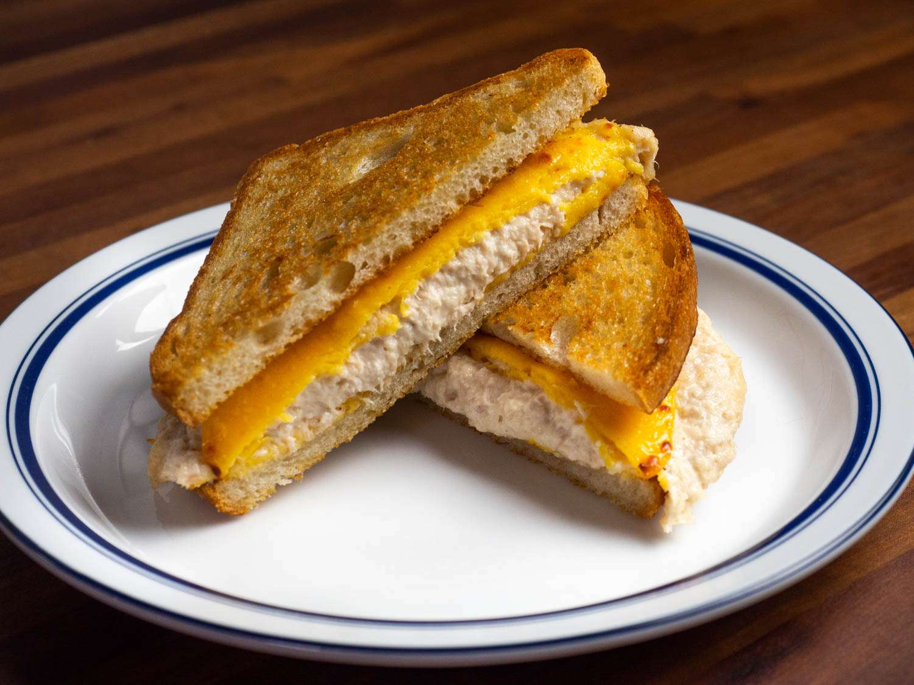

Eggs Over Easy

This is a quick and easy tuna melt recipe.
You will need:
- A 3-5 oz can of tuna
- Two slices of bread
- Cheese of your choosing
- Butter and oil
- Two pans
How to make:
- Preheat both pans
- Butter bread on both sides
- In first pan, add bread
- In second pan, add oil and tuna
- Allow tuna to cook, stirring and mixing as needed
- Allow bread to toast on first side
- When first side of bread is toasted, flip and add a slice of cheese
- When cheese is melted and second side of bread is toasted, remove from pan
- When tuna is fully cooked, season and remove from pan and onto bread
- Add extras as desired (mayo, mustard, sauerkraut, etc.)